Префектура Ямагути · Нагато · морепродукты
Морепродукты Нагато: ежи от ныряльщицы, сушёная рыба и камабоко из Сэнсаки
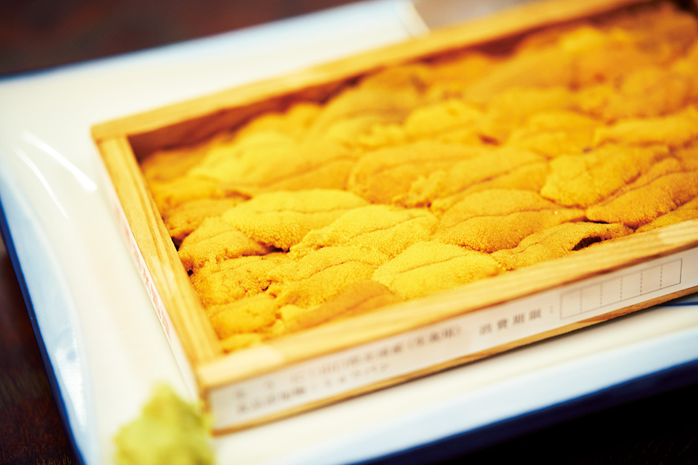
Портовый Нагато на берегу Японского моря кормит свежей рыбой круглый год. Мы заглянули в закусочную, где хозяйка сама ныряет за ежами, на обед к мастеру сушёной рыбы и в мастерскую камабоко, которая до сих пор работает только с утренним уловом.
Море
Свой улов на каждый сезон
Нагато лежит на севере префектуры Ямагути, у Японского моря, а главный его порт это Сэнсаки, один из самых уловистых в префектуре. Сюда круглый год привозят самую разную рыбу и морских обитателей. Кидзихата, дорогой групер, идёт прямо в лучшие рестораны. Кальмар «Сэнсаки бутоика» и ставрида «Сэнсаки торо-адзи» носят имя порта. Ныряльщицы ама из Оуры, промысла с долгой историей, достают чёрных и красных морских ежей, морские ушки, рогатых улиток сазаэ и дикие скальные устрицы. А в бассейнах на суше, куда закачивают морскую воду, растят тигровую фугу, рыбу-собаку.
Список можно продолжать долго. Главное, что весной, летом, осенью и зимой в Нагато есть свой сезонный улов, и выбор всегда большой.
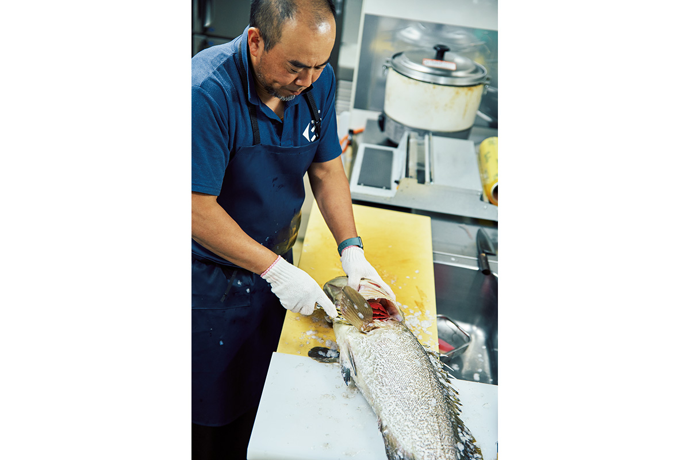
Камабоко: рыбная паста на дощечке
Побережье Ямагути с его богатыми рыбой водами к тому же один из главных в Японии центров камабоко, рыбной пасты, которую формуют и запекают. Считается, что делать её здесь начали в годы Дзёкё (1684–1688): перетёртую рыбу лепили в форме початка рогоза, запекали и подносили князю Ёсимото Мори. Ёсимото Мори (1677–1731) правил княжеством Тёсю, на месте которого теперь лежит префектура Ямагути.
Помогло и то, что в порты побережья приходило очень много эсо, рыбы, из которой и делают камабоко. Сырьё всегда было под рукой, и производство разрослось.
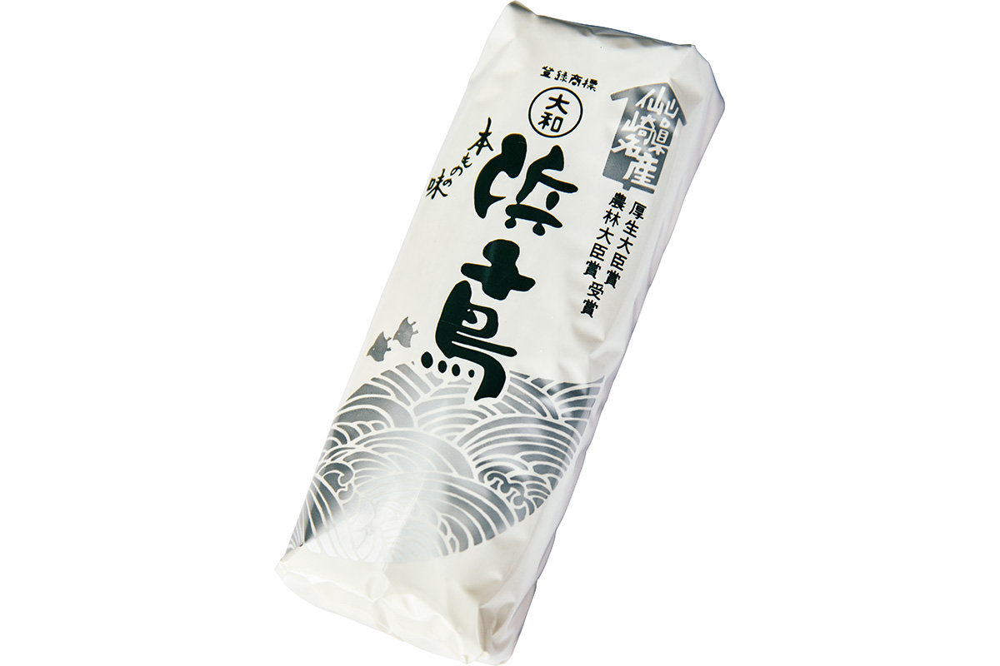
В остальной Японии камабоко обычно готовят на пару, а в Ямагути, и в Нагато тоже, чаще используют способ «якинуки»: пасту выкладывают на дощечку и долго пекут огнём снизу. Камабоко на пару получается мягким, а запечённое так заметно упруже.
Ама
«Осакая»: закусочная ныряльщицы
«Море это радость. Потому я и не бросаю эту работу. Под водой не вспоминаешь ничего плохого, становишься никем, и это так приятно»
хозяйка «Осакаи»
Так, весело улыбаясь, говорит хозяйка закусочной «Осакая». Она встречает гостей за стойкой и при этом до сих пор работает ама: ныряет за морскими дарами.
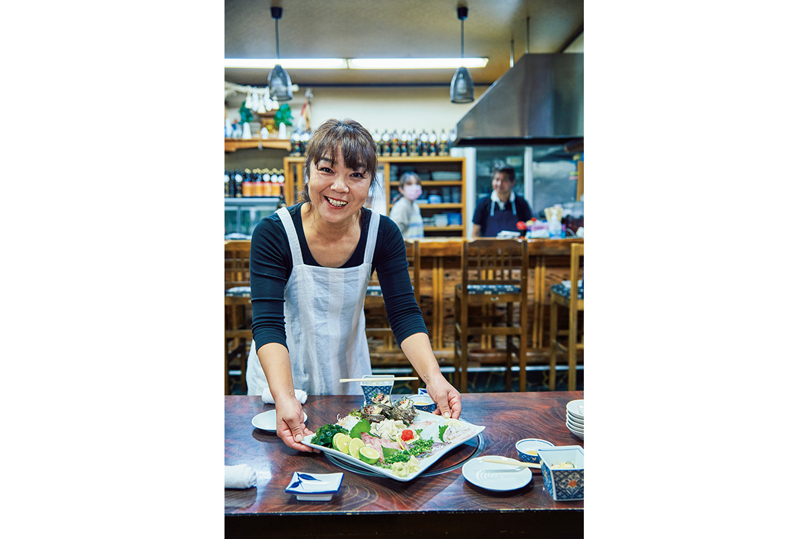
Дом хозяйки стоит у рыбацкого порта Оура, на полуострове, который выступает в Японское море на северо-западе Нагато. История ныряльщиц Оуры, как говорят, начинается в начале XV века. В эпоху Эдо (1603–1868) им покровительствовали князья, и ама были на особом положении: им даже разрешали являться к князю в одежде ныряльщицы, как в парадном платье.
Мать хозяйки тоже была ама, и с морем она дружила с детства, но нырять как профессионал начала в 25 лет. «Эту работу можно совмещать с детьми. Бывало, выйду из воды и прямо мокрая бегу их забирать», вспоминает она и смеётся вместе с мужем и дочерью, которые после её смены стоят с ней за стойкой.
Главная гордость «Осакаи», конечно, это морепродукты. В меню всё, что хозяйка добывает в разные сезоны: морские ушки, сазаэ, ежи, трепанги, вакамэ и другие водоросли, а ещё рыба, только что выгруженная на рынке. Любят здесь и домашние блюда, например омлет и картофельное тэмпуру. Закусочную открыла тётя хозяйки, а когда та отошла от дел, заведение перешло к племяннице. «Фирменные крокеты с кремовой кукурузой мама делает по тётиному рецепту. Начинку трудно собрать, поэтому их умеет готовить только она», рассказывает дочь.
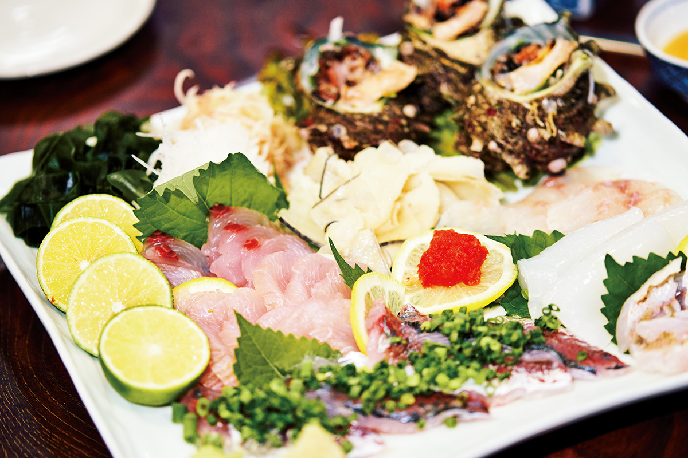
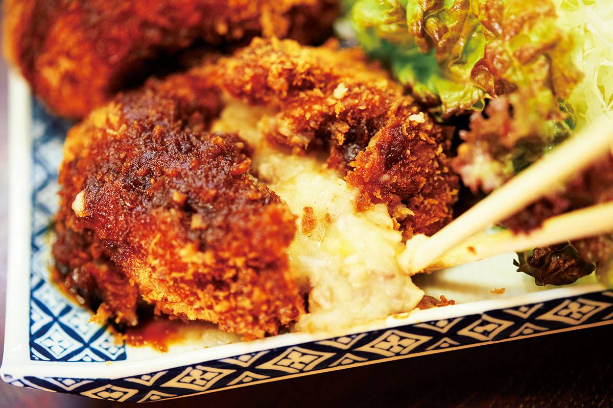
Секрет популярности ещё и в тёплой семейной атмосфере. Если за стойку садится одинокий гость, хозяйка обязательно заводит с ним разговор: не хочет, чтобы кому-то здесь было грустно.
На деревянной коробке с морскими ежами написано имя хозяйки, ведь это её улов. Мы подхватываем палочками сразу несколько язычков и едим без всякой приправы. Густой сладковатый вкус тает во рту, и улыбка появляется сама собой. Теперь понятно, почему чем позже вечер, тем больше в «Осакае» смеха: дело во вкусе и в открытом нраве этой семьи.
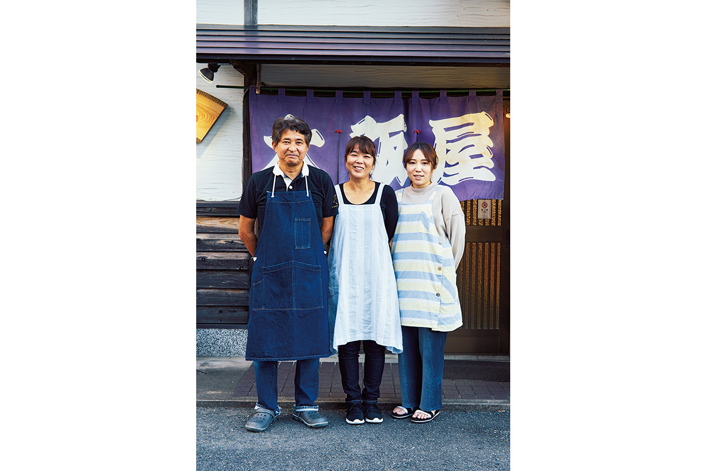
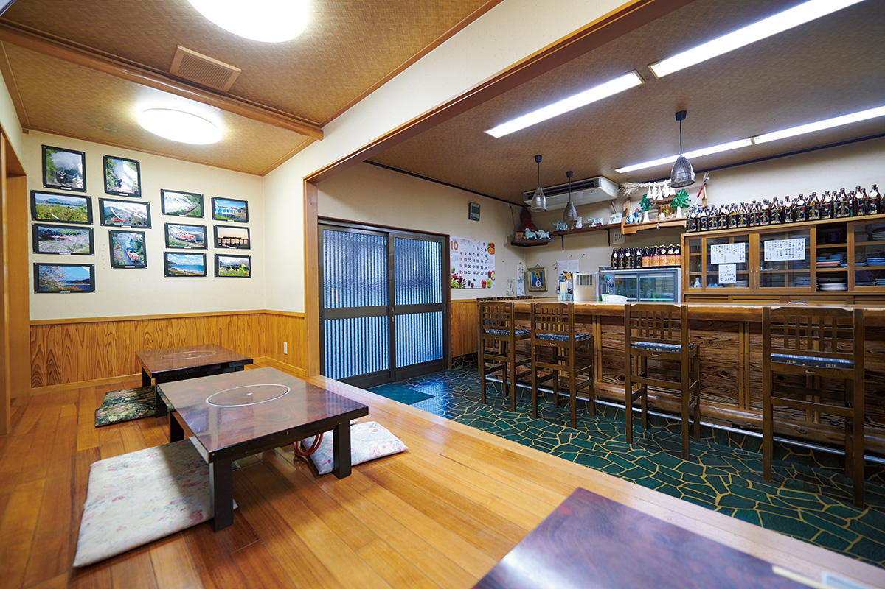
«Осакая»
- Адрес
- префектура Ямагути, Нагато, Хигаси-Фукагава, 843
- Телефон
- +81 837-22-6785
- Часы работы
- 17:00–22:00 (раньше по договорённости)
- Выходные
- воскресенье
Сушёная рыба
«Хидамари»: обед у мастера химоно
Закусочная «Химоноя сёкудо Хидамари» занимает уголок придорожной станции «Сэндзакиттин» на берегу в Сэнсаки. Станция знакомит гостей со всей местной едой, а «Хидамари» подаёт обеды с сушёной сезонной рыбой, по-японски химоно, и с рыбой во фритюре.
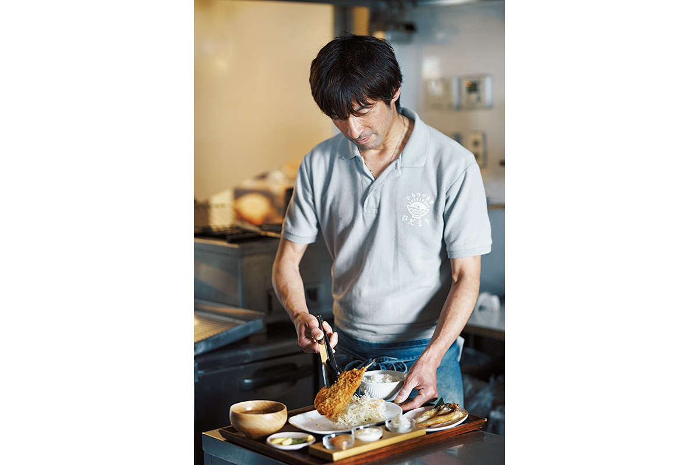
Закусочной управляет компания, у которой фабрика стоит рядом со станцией. Её основал в 2008 году приезжий, влюбившийся в рыбу Сэнсаки: здесь делают и продают химоно, готовые блюда и другие рыбные продукты. Сам он рассказывает, как всё началось.
«Я родился в семье рыбной лавки в префектуре Вакаяма, которой больше ста лет, и двадцать лет занимался переработкой рыбы. Однажды по делам приехал в порт Сэнсаки и увидел, как бьётся ставрида сэцуки-адзи, только что из кошелькового невода. Это меня потрясло. В Ямагути много портов и много видов рыбы, и я сразу почувствовал: здесь я смогу делать ту сушёную рыбу, о которой мечтаю»
основатель компании
Рыбу берут в основном из Сэнсаки, Симоносэки и вод у острова Цуносима. У рыбы из бурного Японского моря плотное мясо и хороший жир, и для сушки лучше не найти. Сразу после закупки её бережно разделывают, чтобы не потерять свежесть, и сушат собственным способом «усиогаэси».
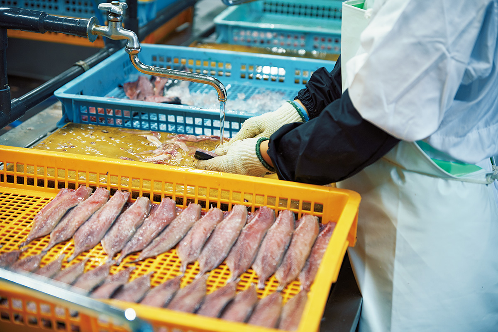
«Мы солим рыбу только рассолом, который смешиваем в своей пропорции: соль „Хякусё-но сио“, которую выпаривают в Нагато, гималайская каменная соль и очищенная морская вода из Китауры, где выросла сама рыба. Потом долго сушим при низкой температуре. Вода и соль из того же моря будто возвращают рыбу к жизни. Химоно получается пухлым, с собственным вкусом рыбы»
основатель компании
Сэцуки-адзи называют ставриду, которая держится у природных рифов япономорского побережья Ямагути, богатых планктоном. Она мясистая и жирная. В «Хидамари» её вручную панируют и жарят во фритюре, делают котлеты из японской макрели савара, а главное место в меню занимают обеды с фирменной сушёной рыбой. Есть и еда навынос: бургер со ставридой каждый день раскупают. В каждом блюде с каждым укусом слышен вкус свежей рыбы.
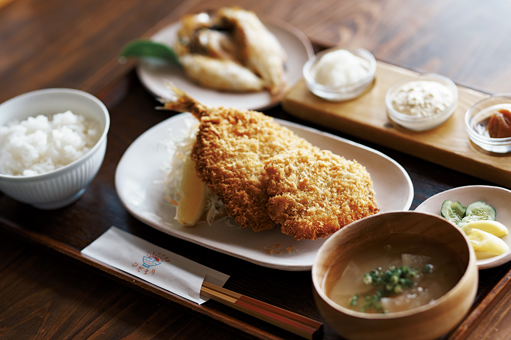
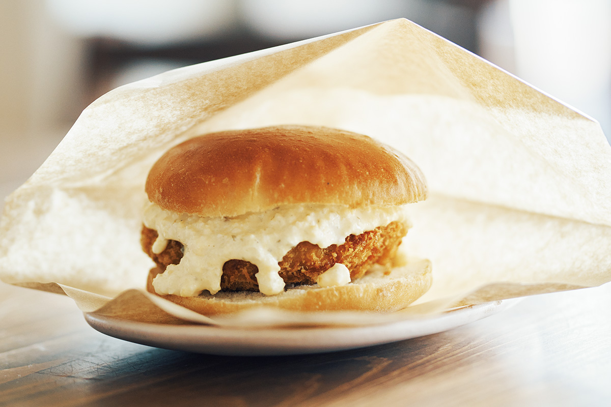
«Я открыл „Хидамари“, потому что хотел, чтобы нашу сушёную рыбу и продукты ели в самом лучшем виде»
основатель компании
«Хидамари» значит «солнечное местечко», и еда здесь такая же тёплая, как название.
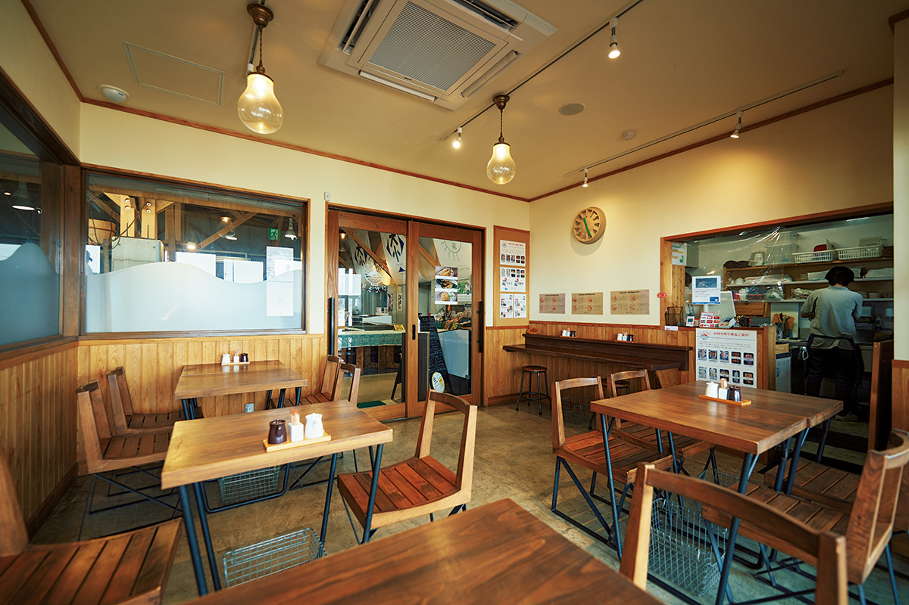
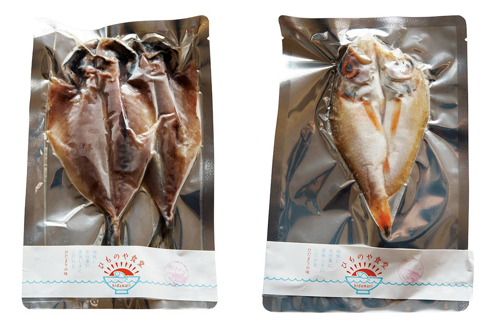
«Химоноя сёкудо Хидамари»
- Адрес
- префектура Ямагути, Нагато, Сэнсаки, 4297-1, придорожная станция «Сэндзакиттин»
- Телефон
- +81 837-27-0178
- Часы работы
- 9:00–18:00 (последний заказ в будни в 15:00, в субботу, воскресенье и праздники в 16:00), еда навынос 9:00–17:00
- Выходные
- второй четверг месяца и 1 января; в августе и в праздники открыто
Камабоко
«Ямато Камабоко»: только утренняя рыба
В Ямагути, где камабоко делают веками, у каждой семьи есть свой любимый производитель. «Ямато Камабоко» ценят не только дома, но и повара префектуры. Спросите почему, и все ответят одно и то же: здесь не идут на уступки в качестве.
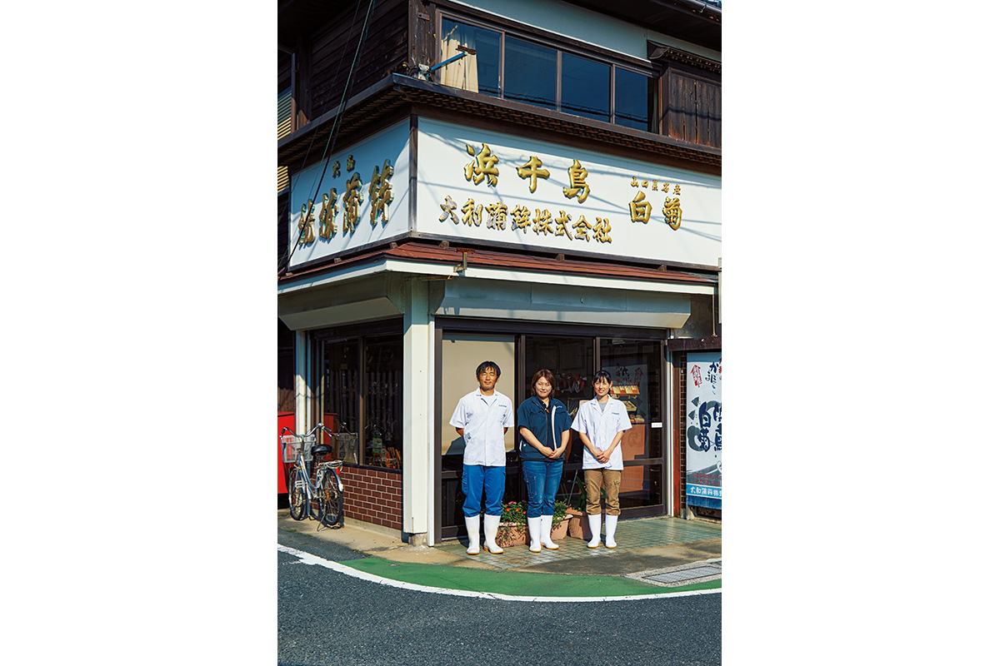
Мастерская стоит у порта Сэнсаки. Большинство производителей работает с замороженной рыбной массой, а здесь с основания в 1946 году берут только свежую эсо из ближних вод. Эсо, или ящероголов, это нежирная белая рыба с плотным мясом, лучшее сырьё для пасты. Её каждое утро привозят прямо из порта, разделывают вручную, и в тот же день она становится камабоко. Поэтому в шторм, когда лодки не выходят в море, производство останавливается. Зачем идти на такой риск? Мы спросили хозяйку.
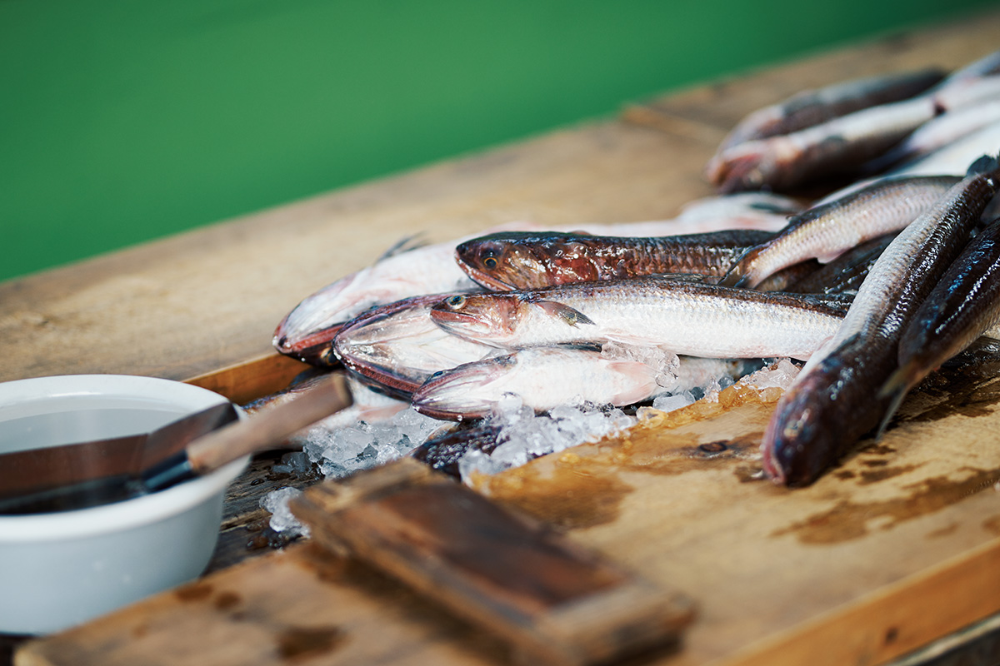
«С замороженной массой работать, наверное, стабильнее. Мы ею никогда не пользовались, так что всего не знаю, но свежесть эсо точно теряется. Уходит вкус, мясо становится хуже, меняется текстура. Чтобы сохранить вкус „Ямато Камабоко“, нам важно, как и раньше, брать свежую эсо»
хозяйка «Ямато Камабоко»
Мясо отделяют от костей и кожи и вручную промывают в воде, чтобы убрать лишний жир и остатки кожи. Потом его перемалывают, растирают в охлаждённой каменной ступке и вымешивают до однородной мягкости. Каждый шаг требует внимания.
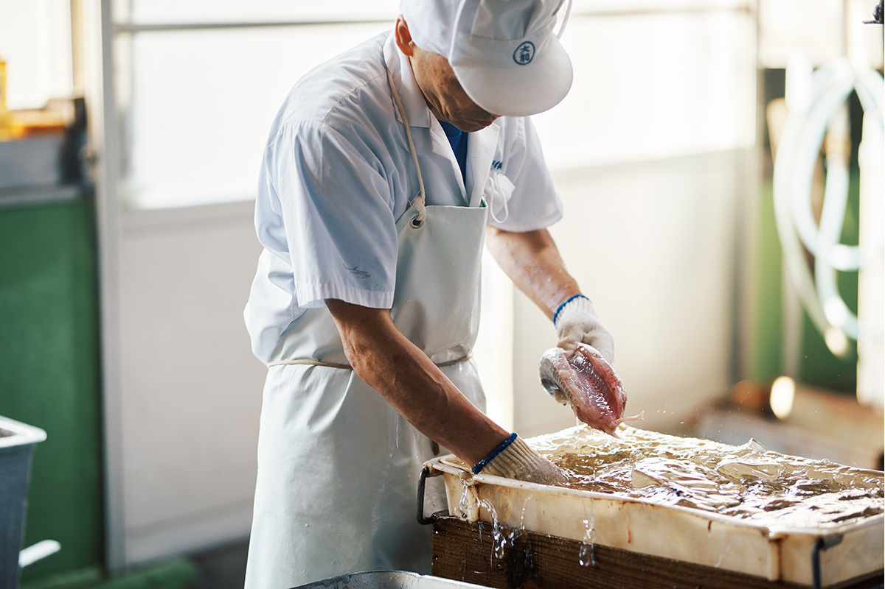
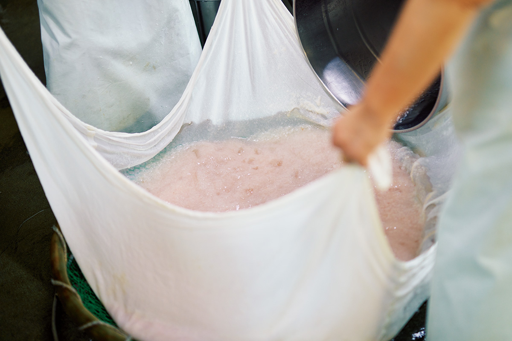
Завершает работу традиционное для Ямагути запекание «якинуки». Дощечку с пастой долго прогревают снизу на слабом жаре, поэтому поверхность остаётся белой и красивой. При нагреве камабоко вздувается, а остывая, сжимается: отсюда характерные мелкие морщинки и упругая, пружинящая на зубах текстура.
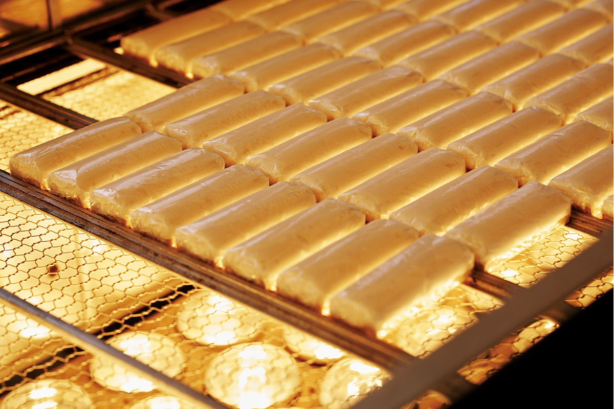
«Готовое камабоко остужаем, даём ему отдохнуть и обязательно пробуем. Если чувствуем, что до уровня „Ямато Камабоко“ оно не дотягивает, не отгружаем ничего из сделанного за день. Вкус, за который мы ручаемся, и есть доверие покупателей»
хозяйка «Ямато Камабоко»
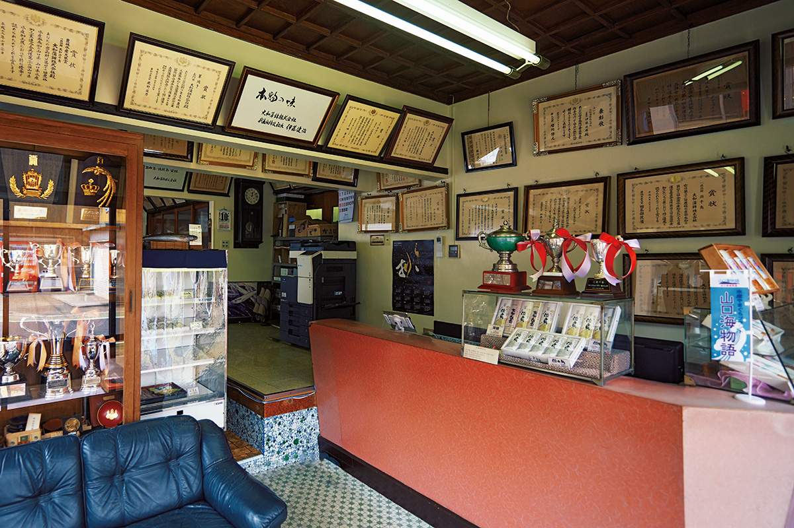
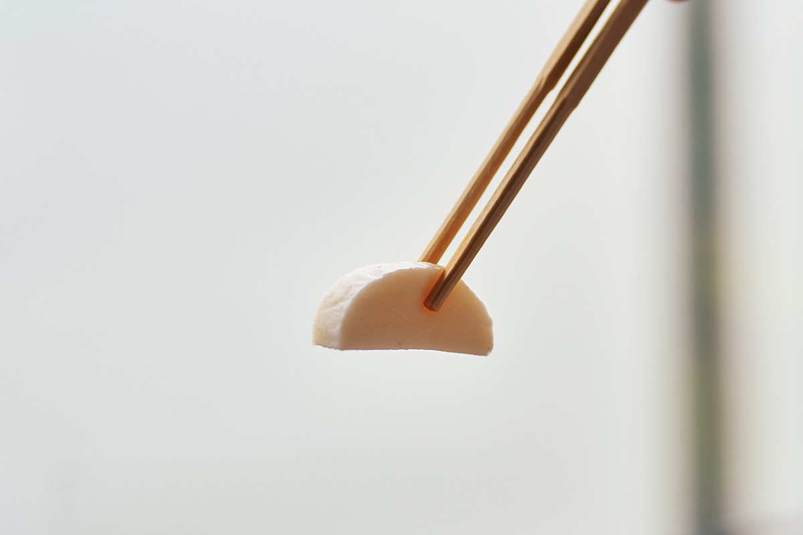
«Ямато Камабоко»
- Адрес
- префектура Ямагути, Нагато, Сэнсаки, 1267
- Телефон
- +81 837-26-0611
- Часы работы
- 9:00–17:00
- Выходные
- новогодние праздники
Фото: Рюсукэ Хонда.